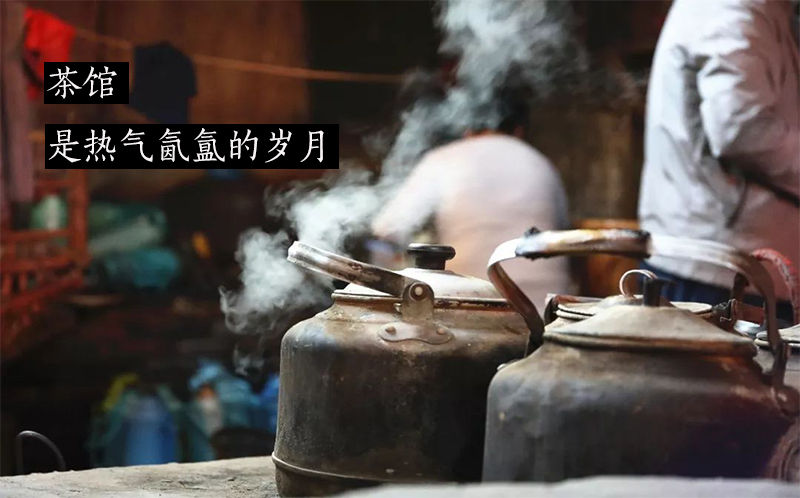
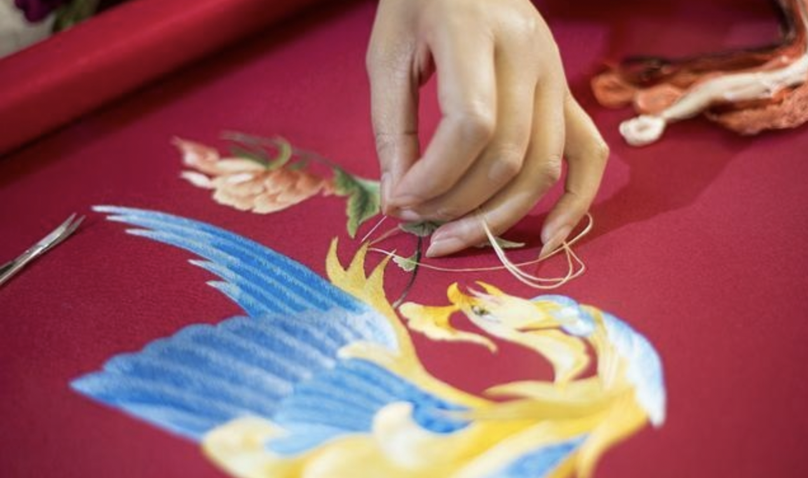
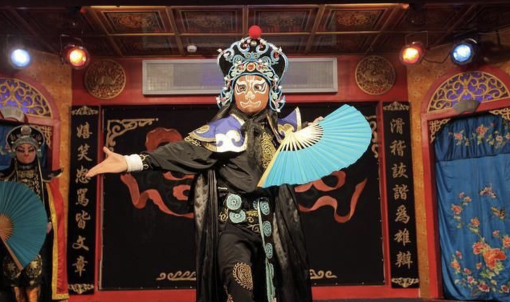
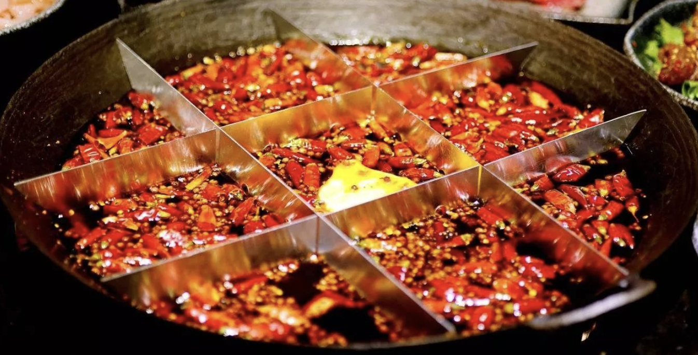
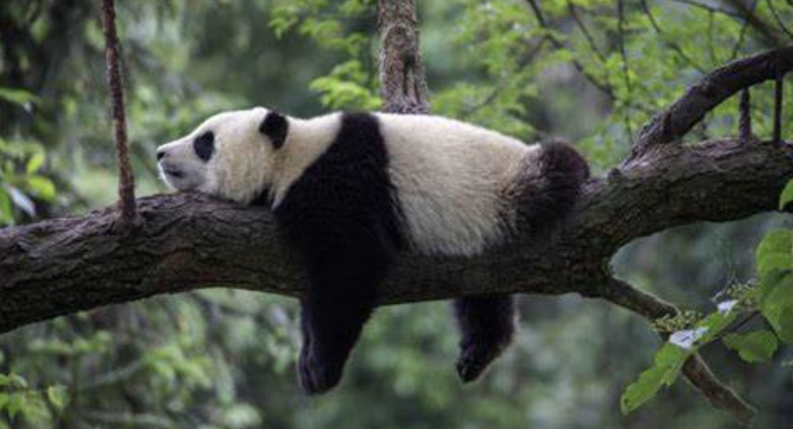
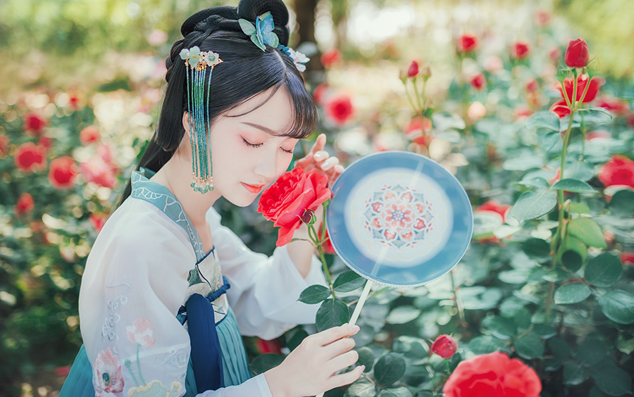
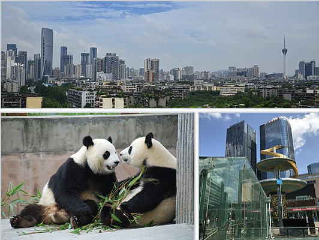
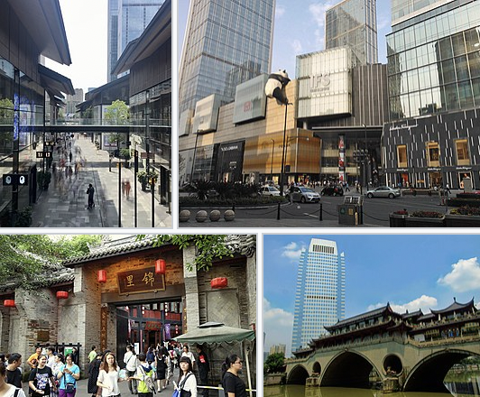

China Culture Series of Chengdu characteristic culture inventory !

Chengdu has a long history, there is "the country of heaven", "Suhang" in Bashu(which means Sicuan, and Suhang is a very beatiful scenic spots in china ). Chengdu's cultural temperament has multiple, quaint and elegant legacy, fashion and openness,
but also HainaBaichuan (HaiNaBaiChuan is a Chinese Word which means tolerance of everything & taoist yin yang balance culture ☯️)'s mind, which is Chengdu's unique charm of classical in the modern. If you want to sum it up in one word, it's
leisure.
In recent years, Chengdu changes too fast, the city is getting bigger and bigger, a little soul can't keep up with the feeling. Zhao Lei's song "Chengdu", it seems to have only stayed in the past a feeling, in some ways, Chengdu is no longer the
original that Chengdu. Here are 8 characteristic cultures in Chengdu, which one do you like best? 🇨🇳

01 Teahouse culture
Chengdu people love to drink tea, love to sitting in teahouse for a rest, order a cup of tea to take a nap or read idle books, or put together a piece of fighting landlords(which means a poker game), this is Chengdu's teahouse culture, and, a
lot of hi business is in the teahouse! The story in Chengdu teahouse is like "the water of the Yellow River, endless".

02 Mahjong culture
Chengdu people love mahjong, for Chengdu people, there's nothing more enjoyable about life than playing mahjong all afternoon. There was a joke that said that on a plane, you can hear the sound of mahjong in Chengdu.

03 Embroidery culture
Sichuan Su Embroidery(Chinese Word is SuXiu '蜀绣'), also known as Chuanxiu, is a national intangible cultural heritage. With Su embroidery(苏州苏绣), Xiang embroidery(湖南湘绣), Guangdong embroidery(广东粤绣), one of China's four famous Embroidery tech. Sheep
Spring Festival Evening(Chinese New Year Gala), embroidery culture communication ambassador Li Yuchun a beautiful "Embroidery(Chinese pop music)" so far yuyin around the beam.

04 Sichuan Opera Culture
Sichuan opera is a feature of Chengdu culture in Sichuan. When it comes to Sichuan drama, people will immediately think of the god of Sichuan opera - change their face.
The fastest time to change a face was held by the famous Sichuan opera master Peng Denghuai, who changed 14 Faces in 25 seconds in a performance, turned them into the 9th and then turned them back into four faces. Sichuan's dramatic change of
face is well-known at home and abroad.

05 Wine culture
Sichuan has many famous wines and is included in the world's Guinness Book of Wines. Chengdu's Water Wells(水井坊) is the site of a Yuan Ming and Qing Dynasty(元明清 Ancient Chinese Dynasties about 1270-1890 A.D ) Sichuan wine old burning house, as
the source of Chinese liquor, its historical value is comparable to the "Qin Shihuang Terracotta Warriors."
Chengdu, since ancient times has been rich in wine, it is said that many of the country's famous wine pulp are from Chengdu, of course, Sichuan's wine culture is more rich, belong to the Sichuan wine Yunnan tobacco said.

06 Hot pot culture
Hot pot, is the chengdu people's common meal, but also foreigners to Chengdu must eat food, no spicy not happy, no hot pot not Chengdu.
What can't be solved with a hot pot, then two meals!
These foreign dignitaries visit Chengdu, the necessary dish is Chengdu hot pot, British Prime Minister David Cameron, German Chancellor Angela Merkel and so on ate Chengdu hot pot is also praise.

07 Panda culture
When you talk about the Great Tang Dynasty, you think of the ancient city of Xi'an; When I saw the statue of the Statue of Liberty on the plane, I knew new York was here... When it comes to Chengdu, people naturally think of pandas.
Big dark circles, fat tuo body, the iconic inner eight-word walking way, Mengbao(萌宝 Chinese word means very cute and very lovely) giant panda is one of the world's most lovely animals.
As long as you talk about giant pandas, it pulls the world closer to Chengdu's emotions and distance. The image of the giant panda is true, friendly and friendly, at leisure, calm and gentle and full of rei spirit.

08 Han clothing culture
In recent years, Han clothing culture has formed a new trend among young people. And Chengdu, as a star of the Chinese fashion circle, in the streets of Chengdu, we can also see many young people wearing beautiful Chinese clothes to show the unique
classical beauty of Chinese culture. Waist-skirts, flying sleeves, red lips... Beautiful young girls, wearing ancient Chinese costumes at the Han Festival, dance and display Chinese classical aesthetics with moving dances.

Wikipedia about Chengdu


Chengdu (Sichuanese pronunciation: [tsʰən˨˩tu˥], Standard Mandarin pronunciation: [ʈʂʰə̌ŋ.tú] (About this soundlisten), UK: /ˌtʃɛŋˈduː/, US: /ˌtʃʌŋ-/[9]), alternatively romanized as Chengtu, is a sub-provincial city which serves as the capital
of the Chinese province of Sichuan. It is one of the three most-populous cities in Western China, the other two being Chongqing and Xi'an. As of 2014, the administrative area housed 14,427,500 inhabitants, the largest in Sichuan, with an urban
population of 10,152,632. At the time of the 2010 census, Chengdu was the fifth-most populous agglomeration in China, with 10,484,996 inhabitants in the built-up area including Xinjin County and Deyang's Guanghan City.
Chengdu is considered a World City with a "Beta +" classification (together with Barcelona and Washington, D.C.) according to the Globalization and World Cities Research Network.[10] In 2020, Chengdu ranked 43rd in the Global Financial Centres Index.[11]
Chengdu is located in central Sichuan. The surrounding Chengdu Plain is known as the "Country of Heaven" (Chinese: 天府之国; pinyin: Tiānfǔ zhi Guó) and the "Land of Abundance". Its prehistoric settlers included the Sanxingdui culture. The site
of Dujiangyan, an ancient irrigation system, is designated as a World Heritage Site. The Jin River flows through the city. Founded by the state of Shu prior to its incorporation into China.
Chengdu is unique as a major Chinese settlement that has maintained its name mostly unchanged throughout the imperial, republican, and communist eras. It was the capital of Liu Bei's Shu Han during the Three Kingdoms Era, as well as several other local
kingdoms during the Middle Ages.[12] During World War II, refugees from eastern China fleeing from the Japanese settled in Chengdu.
After the war, Chengdu's importance as a link between Eastern and Western China expanded, with railways built to Chongqing in 1952, and Kunming and Tibet afterwards.[12] In the 1960s, Chengdu became an important centre of China's national defense industry.
Chengdu is now one of the most important economic, financial, commercial, cultural, transportation, and communication centers in Western China.
Its economy is diverse, characterized by the machinery, automobile, medicine, food, and information technology industries. Chengdu Shuangliu International Airport, a hub of Air China and Sichuan Airlines, is one of the 30 busiest airports in the world,
and the Chengdu railway station is one of the six biggest in China. Chengdu also hosts many international companies and more than 12 consulates; more than 270 Fortune 500 companies have established branches in Chengdu.[13] Chengdu is the seat
of the Western Theatre Command region of the People's Liberation Army.[14]
Chengdu will host the FISU Summer World University Games in 2021, an international multi-sport event. It is considered one of the most livable cities in China.[15][16] Chengdu's culture largely reflects that of its province, Sichuan; in 2011,
it was recognized by UNESCO as a city of gastronomy.[17] It is associated with the giant panda, a Chinese national symbol, which inhabits the area of Sichuan; the city is home to the Chengdu Research Base of Giant Panda Breeding. Chengdu is
one of the world's top 40 cities by scientific research.[18] The city is home to the greatest number of universities and research institutes in Southwestern China, notably Sichuan University, University of Electronic Science and Technology
of China, Southwestern University of Finance and Economics and Southwest Jiaotong University.
Link to Wikipedia about Chengdu
List of key cultural relics protection units in Chengdu
| Attractions |
Times |
The district/county in which it is located |
Batch |
| Wuhouyu Museum(武侯祠)
| Qing Dynasty(清) |
Wuhou District |
The first batch |
| Dufu Grass Hall(杜甫草堂) |
Qing Dynasty(清) |
Green sheep area(青羊区) |
The first batch |
| Wang Jian's tomb(王建墓) |
Five Generations Dynasty Ago(五代前蜀) |
Green sheep area(青羊区) |
The first batch |
| Dujiangyan(都江堰) |
Qin Dynasty to Qing Dynasty |
Dujiangyan |
The second batch |
| A memorial to the death of Xinhai Qiubao Road(辛亥秋保路死事纪念碑) |
Republic(民国) |
Green sheep area |
The third batch |
| A memorial to the death of Xinhai Qiubao Road(什邡堂邛窑遗址) |
Shui Dynasty to Song Dynasty(隋至宋) |
Qionglai |
The third batch |
| Ming Yu Wangling(明蜀王陵) |
Shui Dynasty to Song Dynasty(明) |
Longquanyi district |
The fourth batch |
| Yang Shengxuan and Guihu(杨升庵祠及桂湖) |
Qing Dynasty(清) |
New capital Area |
The fourth batch |
| Liu's Estate(刘氏庄园) |
Qing Dynasty(清) |
Otsuka County |
The fourth batch |
| The ruins of the Twelve Bridges(十二桥遗址) |
Shang Dynasty to XiZhou Dynasty(商至西周) |
Green sheep area |
The fifth batch |
| The tomb of the ancient ship's coffin(古蜀船棺合葬墓) |
East Zhou(东周) |
Green sheep area |
The fifth batch |
| Baoguang Temple(宝光寺) |
Qing Dynasty |
New capital Area |
The fifth batch |
| Stone Tower Temple Stone Tower(石塔寺石塔) |
Song Dynasty(宋) |
Qionglai |
The fifth batch |
| Guanyin Temple(观音寺) |
Ming Dynasty(明) |
Xinjin District |
The fifth batch |
| The ruins of the Shuijing Street Winery(水井街酒坊遗址) |
Ming and Qing(明、清) |
Jinjiang District |
The fifth batch |
| Sands ruins(金沙遗址) |
Shang Dynasty to Zhou Dynasty (商至周) |
Green sheep area |
The sixth batch |
| Meng Zhixiang Tomb |
Five generations later |
Chenghua District |
The sixth batch |
| Huaikou Ruiguang Tower(淮口瑞光塔) |
Song Dynasty |
Jintang county |
The sixth batch |
| Wangjiang Tower ancient building complex(望江楼古建筑群) |
Qing Dynasty |
Wuhou District |
The sixth batch |
| Lo belt hall(洛带会馆) |
Qing Dynasty |
Longquanyi district |
The sixth batch |
| Pujiang Grotto |
North and South Dynasty to Qing Dynasty |
Pujiang county |
The sixth batch |
| Tea Horse Road(茶马古道) |
Tang Dynastry to the Republic of China |
Lucheng, Pujiang County, Dujiangyan City |
The seventh batch |
| Lingyan Temple and Thousand Buddha Towers(灵岩寺及千佛塔) |
Tang Dynasty to Qing Dynasty |
Dujiangyan |
The seventh batch |
| The Temple of the City of Irrigation |
Qing Dynasty |
Dujiangyan |
The seventh batch |
| Quique Tower((奎光塔)) |
Qing |
Dujiangyan |
The seventh batch |
| QingchengShan ancient building complex |
Qing to the Republic of China |
Dujiangyan |
The seventh batch |
| North Zhou Wen's monument and cliff statue |
North and South Dynasty to Qing Dynasty |
Longquanyi district |
The seventh batch |
| Ping An Bridge Sky Main Hall |
Republic |
Green sheep area |
The seventh batch |
| Early architecture at Sichuan University |
Modern |
Wuhou District |
The seventh batch |
| New Field Chuan Palace |
Republic |
Otsuka County |
The seventh batch |